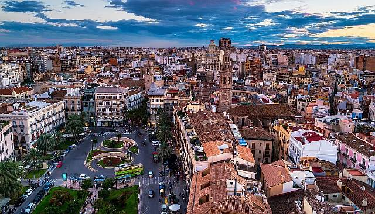

Валенсія - адміністративний центр автономної спільноти Валенсія та однойменної провінції Іспанії. Третє за кількістю жителів місто Іспанії після Мадриду і Барселони. Площа муніципалітету — 134,6 км2. Відстань від Валенсії до Барселони та до Мадриду становить близько 350 км. Населення міста становить близько 814,2 тис. осіб, що становить 18 % усього населення автономної спільноти Валенсія. Офіційними мовами, що використовуються у державних установах, є валенсійська (тобто каталанська) та іспанська.
